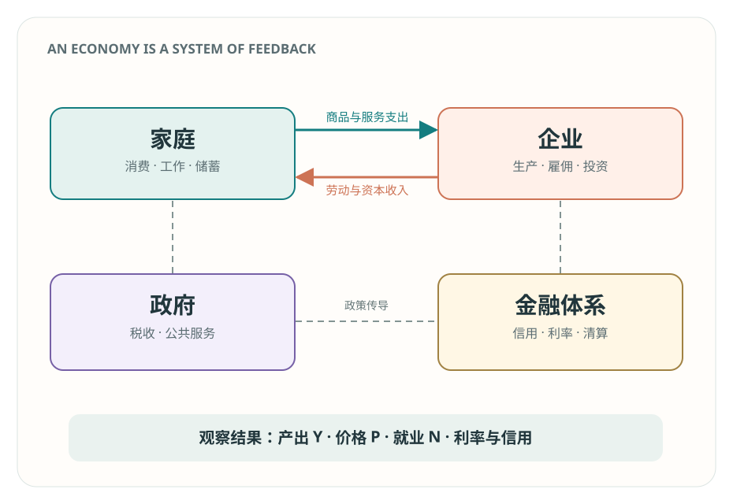

A VISUAL COURSE · 28 OPEN CHAPTERS
经济不是孤立的数字，
而是彼此连接的机制。
一国的产出、物价、就业和信用，为何会同时变化？从真实的问题出发，逐层拆解定义、等式、模型与政策，让每个结论都有可追溯的假设。
28 篇独立文章10 篇深度精修免费 · 无需登录

THE LEARNING PATH
从测量到解释，从模型到世界
COURSE INDEX
完整课程目录
Observe & Measure / 01—7
测量宏观世界
生产、价格、就业与货币：定义比预测更重要。
01什么是宏观经济学宏观vs微观 · 三大目标 · 思想史演进 · 研究方法首批深度重构↗02国民收入核算GDP三种核算方法 · 名义vs实际GDP · GDP与GNP · GDP的局限性首批深度重构↗03价格与通货膨胀CPI/PPI/GDP平减指数 · 通胀三类成因 · 恶性通胀案例 · 通缩危害首批深度重构↗04就业与失业失业率统计口径 · 失业类型与自然率 · 奥肯定律 · 平台经济与灵活就业首批深度重构↗05货币与信用创造货币三大功能 · M0/M1/M2层次 · 存款派生与货币乘数 · 央行角色首批深度重构↗06利率与金融体系名义vs实际利率 · 费雪方程 · 收益率曲线 · 利率市场化改革第二批深度重构↗07宏观数据解读实战数据来源 · 高频指标体系 · 季节调整陷阱 · 相关≠因果第二批深度重构↗
Short-run Fluctuations / 08—12
理解短期波动
从乘数到 IS–LM 与 AD–AS 的因果结构。
Policy & Institutions / 13—18
经济行为与政策
居民、企业、财政、央行与金融稳定。
Open Economy & Growth / 19—25
开放经济与长期增长
对外联系、增长来源、经济周期与预期。
19开放经济宏观经济学国际收支BOP · 汇率制度 · 三元悖论 · 蒙代尔-弗莱明模型↗20汇率理论与货币区购买力平价 · 利率平价 · 最优货币区 · 人民币汇率改革↗21经济增长：索洛模型资本积累与稳态 · 技术进步来源 · 索洛残差 · 趋同与分化↗22内生增长与制度Romer模型 · 人力资本 · 制度决定论 · 中等收入陷阱↗23经济周期理论RBC理论 · 新凯恩斯周期 · 信贷周期 · 明斯基时刻↗24预期与宏观经济学适应性vs理性预期 · 卢卡斯批判 · 时间不一致性 · 前瞻指引↗25DSGE模型与现代方法微观基础 · 新凯恩斯DSGE · Dynare实践 · HANK前沿↗
Field Applications / 26—28
理解现实经济
中国经济、全球事件与综合实战。
定义决定我们究竟在比较什么。
每章中的示例数据会明确标为构造案例，不代表最新统计；实际研究需核对地区、时段、价格基期、季节调整和发布修订。
从 GDP 这把尺子开始 →